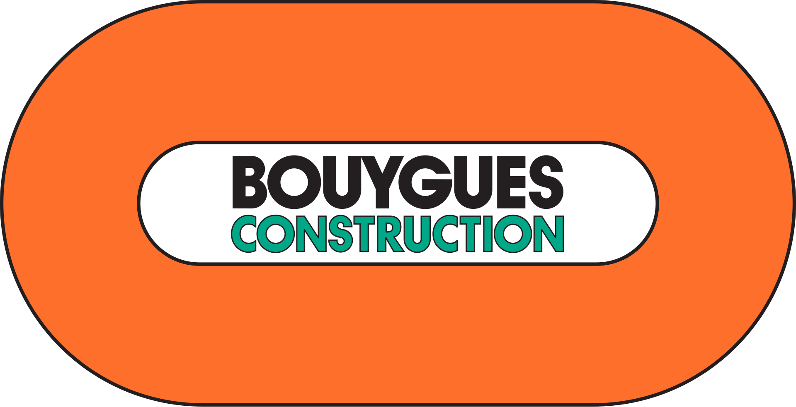

BUILDING
UN GROUPE FRANÇAIS · UNE HISTOIRE INTERNATIONALE
Construire depuis
plus de 70 ans.
Au sein de Bouygues Construction IT, je découvre le système d'information d'un groupe international du BTP.
Le 1er janvier 1952, Francis Bouygues crée l'Entreprise Francis Bouygues, spécialisée dans le bâtiment et les travaux industriels en région parisienne. L'entreprise se développe ensuite en France et à l'international avant de devenir Bouygues Construction, filiale du groupe Bouygues.
Aujourd'hui, ses équipes conçoivent, réalisent et rénovent des bâtiments et des infrastructures dans plus de 50 pays. Ses activités couvrent notamment le bâtiment, les travaux publics, l'énergie et les services associés.
78280 Guyancourt
Données 2025 et informations historiques : Bouygues Construction · Site officiel
EN IMAGES · ENTREPRISE & ÉQUIPE
Mon environnement
Bouygues Construction
ENVIRONNEMENT PROFESSIONNEL
Outils & technologies
Les outils et environnements mobilisés dans les activités de support, de déploiement et d'administration.
GLPI
Gestion des tickets, suivi des demandes et inventaire du parc.
Windows 10 / 11
Préparation, configuration et support des postes utilisateurs.
Windows Server
Environnement système et services d'infrastructure.
Active Directory
Environnement d'annuaire et gestion des ressources du domaine.
Office 365
Outils de productivité et services collaboratifs.
VPN entreprise
Accès distant aux ressources dans le respect des règles de sécurité.
Réseaux LAN / WAN
Notions et environnements réseau utilisés par les équipes.
Supervision réseau
Suivi de l'état et de la disponibilité des infrastructures.
Sécurité opérationnelle
Appliquer les consignes et comprendre l'importance des restrictions de sécurité au quotidien.
Communication utilisateur
Écouter, reformuler et expliquer les solutions de façon adaptée à chaque interlocuteur.
Gestion des priorités
Qualifier les urgences, suivre plusieurs demandes et solliciter les bonnes équipes si nécessaire.
COORDONNÉES DE L'ENTREPRISE
Bouygues Construction
Siège social — Challenger
78280 Guyancourt, France
+33 1 30 80 00 00
www.bouygues-construction.com